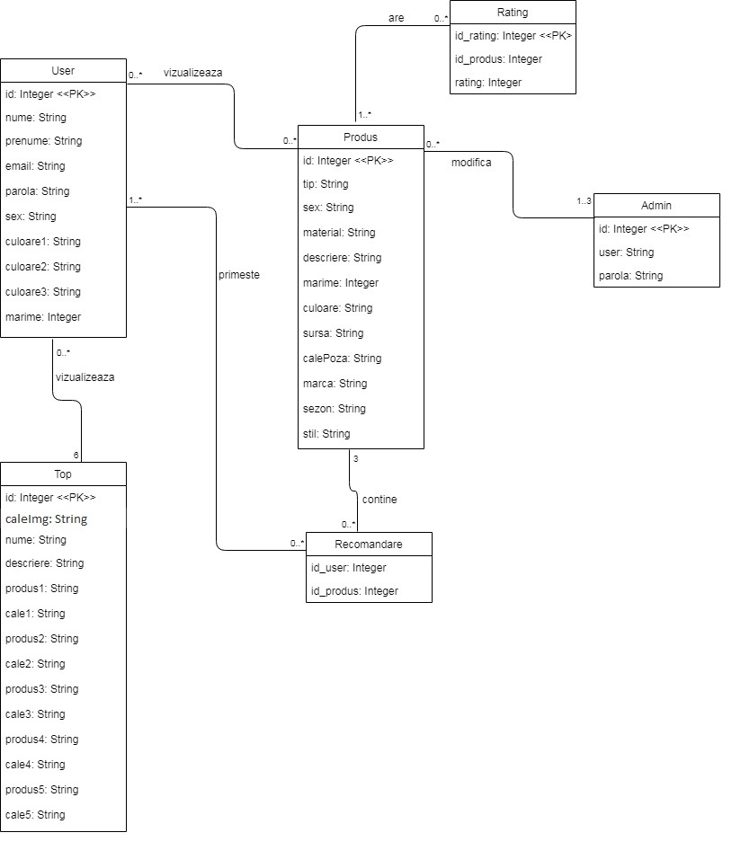

FooW (Footwear Web Assistant)
Descriere
Unele persoane pot intampina dificultati in alegerea incaltamintei
potrivite pentru anumite ocazii: interviu de angajare, spectacol,
campionat de sah etc. Este necesara o aplicatie Web ce permite alegerea
pieselor de incaltaminte, oferindu-se si diverse recomandari conform
sezonului, cromaticii, marcii preferate, tendintelor modei,
caracteristicilor speciale si/sau stilului vestimentar adoptat de
persoana respectiva -- de exemplu, tinuta sportiva, pentru birou si
altele. Se vor prezenta informatii referitoare la achizitionarea unor
produse de interes (e.g., sugestii de genul "se apropie vara, pentru
plimbari nocturne ar fi utile niste botine fosforescente" sau "pentru
ceremonii dansante e indicat sa porti pantofi cu toc de inox; asorteaza-i
cu o toga argintie"). Fiecare sugestie oferita utilizatorului va fi
expediata si prin posta electronica si votata (i.e. apreciata
cu 1, 2,..., 5 "stele" sau calificative), astfel incat sa poata fi
propusa si altor persoane avand preferintesimilare. Statisticile
generate vor adopta formatele HTML, CSV, JSON si XML. Bonus:
preluarea de pe situri Web existente a datelor despre incaltaminte.
Membrii echipei
-
Dascalu Raluca Alexandra(implementarea si actualizarea paginilor:
Produs, Recomandare, Rezultate)
-
Garam Corina(implementarea si actualizarea paginilor:
Home Page, SIgnUp si Account,Formular Produs)
-
Roman Nadia-Georgiana(implementarea si actualizarea paginilor:
LogIn, Statistici, Topuri, Formular Top)
Tehnologii utilizate
-
Dezvoltarea Front-end-ului: HTML+CSS
-
Scripturi de reprezentare a datelor + Baza de date: Oracle (PL/SQL)
-
Dezvoltarea Back-end-ului: PHP
In continuare, vom prezenta metodologiile pe care le vom folosi
sau pe care le-am folosit deja:
HTML: Cu ajutorul HTML-ului am reusit integrarea paginii noastre
intr-un anumit serviciu Web(vizualizarea site-ului la nivel de browser).
Totul plecand de la <html></html> (un sablon de cod html ) am incercat
realizarea unui proiect cu un aspect destul de atractiv si usor de
inteles petru utilizatori.
CSS: A fost folosit CSS-ul pentru stilizarea paginilor in ceea ce priveste
vizualizarea continutului aplicatiei noastre. Evident ca au existat
diferite probleme la inceput, dar pe parcurs am inteles mai bine cum
trebuie sa lucram la proiect.
Baze de Date: Ca si metoda de stocare a datelor, a fost folosita o baza
de date MySQL online, si anume,
phpmyadmin . Cu ajutorul acesteia vom putea importa(crea) si
actualiza toate datele referitoare la produsele de incaltaminte pe
care aplicatia noastra le poate recomanda. Diagrama de mai jos cuprinde tabelele
existente in baza de date.

Pagini
Aplicatia noatra contine urmatoarele pagini:
-
Pagina LogIn
-
Aceasta pagina contine numele aplicatiei noastre, doua
campuri ce trebuiesc completate de catre utilizatori
pentru a se loga in aplicatia noastra, butonul
“Logheaza-te” si butonul “Inregistreaza-te”.
-
Cele doua campuri reprezinta emailul si parola utilizatorului.
-
Prin apasarea butonului “Logheaza-te”, utilizatorul se
logheaza in aplicatie, iar prin butonul “Inregistreaza-te”,
utilizatorul se inregistreaza in aplicatie.
-
Pagina SignUp
-
La fel ca si pagina de LogIn, aceasta contine numele aplicatiei.
-
Pe langa aceasta mai sunt si campurile: Nume, Prenume, Email,
Parola, Repeta Parola, Sex, Culori Preferate(Alege maxim 3),
Marimea(intre 35-45). Acestea vor fi completate de catre
utilizator conform datelor personale si preferintelor acestuia.
-
Pagina mai are si o casuta care poate fi bifata sau nu daca este
de acord, respectiv daca nu e de acord utilizatorul ca datele
introduse sa fie prelucrate.Daca nu este bifata casuta, utilizatorul
nu se poate inregistra.
-
Mai exista doua butoane: “Anuleaza” si “Inregistreaza-ma” prin care
utilizatorul alege sa anuleze inegistrarea sau sa o confirme.
-
Pagina Account
-
Aceasta pagina este structurata aproape la fel ca si pagina SignUp
cu mici modificari.
-
Ce are in plus este faptul ca acum exista in partea stanga-sus o poza
a utilizatorului logat si prenumele acestuia.
-
Aici, nu mai exista butonul “Inregistreaza-ma” si este inlocuit cu
butonul “Salveaza modificarile”, care salveaza datele modificate
privind contul utilizatorului.
-
Pagina principala (Home Page)
-
Pagina principala contine si ea numele aplicatiei.
-
In partea stanga-sus a paginii este un meniu de navigare ce contine
optiunile: ”Acasa”, ”Contul meu” si “Iesire”.Acest meniu este prezent
in toate paginile in afara de LogIn, SignUp si Account.
-
In partea dreapta-sus este un camp de search cu butonul “Cautare”.
-
Apoi, in partea centrala este un mesajul: “Bine ati venit pe pagina noastra! Doriti o recomandare?”
-
Mai jos, se pozitioneaza o imagine cu incaltaminte, cu rol de delimitator de continut.
-
Apoi, in partea stanga se afla 6 imagini cu descrieri specifice
pentru fiecare in parte, ce reprezinta topuri de 5 perechi de
incaltaminte documentate din surse de pe internet.
-
In partea dreapta este sidebar-ul cu mesajul “V-ar mai putea interesa…”
urmat de cateva link-uri utile.
-
In partea de jos a paginii, intalnim mesajul “Completeaza aici pentru
o recomandare!”, urmat de campurile: Stil, Sezon, Tinuta (culoare1),
Tinuta (culoare2), Tinuta (culoare3), Sex, Marca.
-
Aceste campuri sunt urmate de butonul “Obtine recomandari”.
-
Pagina Topuri
-
Pana la delimitator inclusiv, contine exact aceleasi lucruri ca
si pagina principala, in afara de mesajul: “Bine ati venit pe pagina
noastra! Doriti o recomandare?”.
-
Dupa delimitator, in partea stanga este titlul topului si o scurta descriere a acestuia.
-
Sidebar-ul este pozitionat la fel, doar ca de aceasta data link-urile sunt actualizate.
-
Mai jos, urmeaza elementele topului in sine, adica, numele produsului
din top impreuna cu descrierea sa si o poza caracteristica atasata acestuia.
-
Pagina Recomandare
-
Aceasta pagina are in loc de partea de topuri, o lista de 3
produse recomandate de catre aplicatie pentru utilizator.
-
Fiecare element din lista este alcatuit din imaginea produsului
urmat de textul de recomnadare atasat acetuia.
-
Pagina Produs
-
Pana la delimitator inclusiv, contine exact aceleasi lucruri ca
si pagina principala, in afara de mesajul: “Bine ati venit pe
pagina noastra! Doriti o recomandare?”.
-
Pe partea de continut, in partea stanga contine o imagine a produsului
insotita de un icon heart.
-
Sub imaginea produsului sunt culorile disponibile pentru produs
si 5 stelute pentru votarea produsului.
-
In partea dreapta sunt : numele, materialul, descrierea, alegerea
marimii, marca, site-ul sursa si tag-uri pentru produs.
-
Pagina Statistici
-
Similara cu pagina Topuri, cu sidebar-ul actualizat.
-
Pe partea de continut se gaseste titlul statisticii urmat de
procentajul aferent la care se adauga la inceput imagina
produsului reprezentativ pentru rezultatul dat.
-
Pagina Rezultate
-
Aceasta pagina este foarte asemanatoare cu pagina Recomandare.
-
De altfel, contine in loc de lista cu 3 recomandari, o lista
de produse ce apartin tipului de incaltaminte scris in campul
de cautare.
-
Un element din lista este alcatuit dintr-o imagine a produsului
urmat de denumirea produsului din imagine.
-
Pagina Formular Produs
-
Aceasta pagina este alcatuita dintr-un titlu “Adauga(Modifica) Produs /FootWear”.
-
Mai contine si campurile:Tip, Sex, Material, Descriere, Marime,
Culoare1, Culoare2, Culoare3,Sursa, CaleImagine, Marca, Sezon, Stil.
-
Mai jos de campurile specificate contine butoanele “Anuleaza” si
“Salveaza”, pentru a salva sau anula modificarile facute asupra topului.
-
Pagina Formular Top
-
Aceasta pagina este foarte asemanatoare cu pagina Formular Produs.
-
Difera doar campurile ce trebuiesc completate:CaleaPrincipala,
Nume, Descriere, Produs1, Cale1, Produs2, Cale2, Produs3, Cale3,
Produs4, Cale4, Produs5, Cale5.
-
Similare sunt si butoanele ca in pagina Formular Produs.
Functionalitati
In diagrama de mai jos putem vedea cum interactioneaza diferiti utilizatori web cu aplicatia.

Cum navigheaza un utilizator prin aplicatie:
-
[LogIn] Pentru a utiliza aplicatia, prima data userul are acces
la pagina de LogIn , unde completeaza formularul si se logheaza
prin butonul “Logheaza-te”, daca are deja un cont.
-
[LogIn] Daca acesta nu este inca inregistrat in aplicatia noastra,
poate apasa butonul “Inregistreaza-te” pentru a se inregistra.Acest
buton trimite userul la pagina SignUp.
-
[SignUp] Dand click pe butonul “Inregistreaza-ma” ,acesta isi creeaza
cont si este trimis la pagina LogIn, Daca a apasat “Anuleaza” spatiile
formularului se reseteaza.
-
Userul nu are acces la nicio alta pagina decat LogIn sau SignUp pana nu obtine un cont.
-
Dupa ce userul s-a logat, acesta este trimis la pagina pricipala.
-
[Home Page] In pagina principala, userul poate cauta un produs
anume scriind tipul de incaltaminte dorit.
-
[Home Page] Dupa apasarea butonului de “Cautare”, userul va obtine
lista cu toate produsele din aplicatie ce apartin tipului cautat,
deschise in pagina Rezultate .
-
[Home Page] Dand click pe cuvantul “recomandare” din mesajul
“Bine ati venit pe pagina noastra! Doriti o recomandare?”,
userul va fi trimis in josul paginii unde va completa un
formular pentru obtinerea unei recomandari, dand click pe butonul
“Obtine recomandari”.
-
[Home Page] Pe partea de continut userul poate vedea 6 topuri,
dand click pe imagine se deschide pagina Topuri in care topul
este descris detaliat si mai poate vedea si alte link-uri utile
sugerate in partea stanga a paginii, dand click pe ele.
-
[Recomandare] Dupa ce userul da click pe “Obtine recomandari”,
acesta este trimis catre pagina Recomandare.
-
[Home Page] In pagina principala, userul poate naviga cu ajutorul
meniului din partea stanga-sus.”Acasa” trimite userul la pagina
principala, “Contul meu” trimite userul la pagina Account, “Statistici”
trimite userul la pagina Statistici si “Iesire” il trimite la pagina
LogIn si iese din contul sau de pe aplicatie.
-
[Account] In momentul in care pagina Account este accesata, userul
poate recompleta formularul de inscrierere pentru a-si actualiza
datele din contul sau si pentru a salva modificarile apasand butonul
“Salveaza modificari”.
-
[Account] Butonul “Anuleaza” are aceeasi functionalitate ca si in pagina SignUp.
-
[Recomandare] In pagina Recomandare, userul vizualizeaza lista
de recomandari si dand click pe imaginea produsului, acceseaza
pagina Produs. In stanga paginii poate vizualiza de asemenea,
alte link-uri utile.
-
[Produs] In aceasta pagina, userul poate vedea detaliat produsul,
impreuna cu detalii despre acesta, poate alege marimea buna,
culoarea dorita,poate accesa site-ul unde gaseste produsul spre
vanzare, poate vota produsul selectand intre 1-5 stele si mai
poate da click pe inima pentru a-i fi trimisa recomandarea pe
email.
-
[Statistici] In aceasta pagina userul se poate folosi de aceleasi
functionalitati comune, putand vedea si statistici referitoare
la produsele din aplicatie.
-
[Rezultate] In momentul in care userul a dat click pe butonul
de Cautare din HomePage, acestuia i se deschide pagina Rezultate,
in care poate vedea o lista a rezultatelor obtinute in urma cautarii
introduse de catre user.
-
De asemenea, dand click pe pagina produsului, se deschide
pagina Produs cu toate detaliile corespunzatoare.
-
Pentru a naviga intre pagini, usual se foloseste meniul de navigare present in fiecare pagina.
-
Diagrama de mai jos prezinta modul in care interactioneaza utilizatorul cu aplicatia

Categorii de useri
Utilizatori pot fi persoane de orice varsta, care sunt capabile sa
foloseasca internetul si sa navigheze prin aplicatia noastra. Produsele
sunt disponibile doar pentru marimile in intervalul 35-45, astfel
neavand recomandari de produse pentru copii.
Administratorul
-
Pentru a face modificari in aplicatie, admin-ul se logheaza si
el in pagina de LogIn, doar ca vor fi testate ce statut au datele
introduse de catre admin pentru logare (in baza de date se va
specifica un statut pentru a sti cine este admin si cine este user).
-
[HomePage] In meniul din partea stanga-sus se adauga campul
“Adauga Produs”, care ii permite admin-ului sa adauge un nou
produs in aplicatie. Acestuia i se deschide pagina Formular
Produs unde sunt campurile pentru completare.
-
[HomePage] In coltul din dreapta-sus al fiecarei imagini ce
reprezinta un top, este adaugat un icon pentru a-i permite admin-ului
sa editeze topurile.Dand click pe acest icon, admin-ului i se deschide
pagina Formular Top.
-
[Produs] Mai jos de detaliile produsului, am adaugat 2 butoane “Modifica Produs” si “Sterge Produs”.
-
Primul buton trimite la pagina Formular Produs, iar al doilea sterge produsul si trimite catre HomePage.
-
Diagrama de mai jos prezinta modul in care interactioneaza administratorul cu aplicatia

Progresul si lucrul la proiect se poate urmari pe pagina: FooW